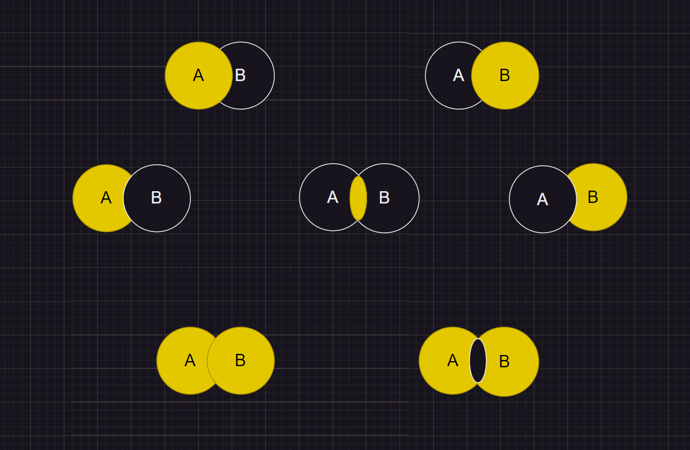

# 基础储备
DDL: 数据定义语言 创建管理库、表
DML: 数据操作语言 表增删改查
DCL: 数据控制语言
# DML 查询
# 多表查询的基本介绍
- 需要有连接方式
- 需要指明字段所在表
- 可以在 FROM 给表起别名增加可读性，在 SELECT 和 WHERE 使用别名
- n 个表实现多表查询需要 n-1 个连接条件
# 自连接 非自连接
- 自连接：自我引用
- 员工和管理者的对应关系：员工 id = 管理者 id
# 内连接 外连接
#多个表内连接 | |
SELECT a1,b1 | |
FROM A JOIN B | |
ON A.data = B.data | |
ON B.data = C.data | |
...; |
- 内连接：合并具有同一列的两个以上的表的行，结果集中不包含一个表与另一个表不匹配的行
- JOIN ON
- 外连接：两个表在连接过程中除了返回满足连接条件的行以外还返回左 / 右表中不满足条件的行，这种称左 / 右外连接。没有匹配的行时，结果表中相应列为 NULL（关键字：所有，多个表）
- 左外连接：左表为主表，右表为从表（关键字：所有，多个表）LEFT JOIN ON
- 右外连接：右表为主表，左表为从表（关键字：所有，多个表）RIGHT JOIN ON
- UNION：返回两个查询结果的并集，去重
- UNION ALL（效率更高）：返回两个查询结果的并集，不去重（推荐使用）

#左上图 | |
SELECT a1,b1 | |
FROM A LEFT JOIN B | |
ON A.data = B.data; |
#右上图 | |
SELECT a1,b1 | |
FROM A RIGHT JOIN B | |
ON A.data = B.data; |
#左中图 | |
SELECT a1,b1 | |
FROM A LEFT JOIN B | |
ON A.data = B.data | |
WHERE B.data = NULL; |
#右中图 | |
SELECT a1,b1 | |
FROM A RIGHT JOIN B | |
ON A.data = B.data | |
WHERE A.data = NULL; |
#中图 内连接 | |
SELECT a1,b1 | |
FROM A JOIN B | |
ON A.data = B.data |
#左下图 左上 + 右中 满外连接 | |
SELECT a1,b1 | |
FROM A LEFT JOIN B | |
ON A.data = B.data | |
UNION ALL | |
SELECT a1,b1 | |
FROM A RIGHT JOIN B | |
ON A.data = B.data | |
WHERE A.data = NULL; |
#左下图 右上 + 左中 满外连接 | |
SELECT a1,b1 | |
FROM A RIGHT JOIN B | |
ON A.data = B.data | |
UNION ALL | |
SELECT a1,b1 | |
FROM A LEFT JOIN B | |
ON A.data = B.data | |
WHERE B.data = NULL; |
#右下图 左中 + 右中 | |
SELECT a1,b1 | |
FROM A LEFT JOIN B | |
ON A.data = B.data | |
WHERE B.data = NULL | |
UNION ALL | |
SELECT a1,b1 | |
FROM A RIGHT JOIN B | |
ON A.data = B.data | |
WHERE A.data = NULL; |
-
补充（可用可不用）：
-
NATURAL JOIN: 自动查询两张连接表中所有相同的字段，然后进行等值连接
-
SELECT a1,b1
FROM A JOIN B
ON A.data1 = B.data1
AND A.data2 = B.data2
# 等价SELECT a1,b1
FROM A NATURAL JOIN B;
-
-
USING: 两个不同表中相同的字段（自连接不使用，字段不一样）
-
SELECT a1,b1
FROM A JOIN B
ON A.data1 = B.data1
#等价SELECT a1,b1
FROM A JOIN B#相同字段
USING (data1)
-
# 函数
# 单行函数
# 基础认识
- 操作数据对象
- 接受参数返回一个结果
- 只对一行进行变换
- 可以嵌套
- 参数可以是一列或一个值
# 数值型函数
# 基本函数
ABS(x)：返回 x 的绝对值SIGN(x)：返回 x 的符号，正数 1，负数 - 1,0 返回 0PI()：返回圆周率CEIL(x),CEILING(x)：返回>=x的最小整数FLOOR(x)：返回<=x的最大整数LEAST(x1,x2,x3…)：返回列表最小值GREATEST(x1,x2,x3…)：返回列表最大值MOD(x,y)：返回 x 除以 y 后的余数RAND()：返回 0~1 的随机值RAND(x)：返回 0~1 的随机值，相同的 x 值会产生相同的随机数ROUND(x)：返回对 x 四舍五入的值ROUND(x,y)：返回对 x 四舍五入的值，保留小数点后 y 位TRUNCATE(x,y)：返回截断 y 位小数后的结果SQRT(x)：返回 x 的平方根，x < 0 返回 NULLPOW(x,y): 返回 x 的 y 次方EXP(x):e 的 x 次方LN(x)/LOG(x)：返回e LOG10(x) LOG2(x): 返回10 2 BIN(x) OCT(x) HEX(x):x 的进制数
# 字符串函数
ASCLL(S): 返回字符串第一个字符的 ASCLL 码CHAR_LENGTH(S)：返回字符个数LENGTH(S): 返回字节数（中文一个字符占 3 个字节）CONCAT(S1,S2,S3…): 连接多个字符串CONCAT(x,S1,S2,S3…): 用 x 连接多个字符串INSERT(str,pos,length,newstr): 将 str 中 pos 位置往后 length 个字符替换成 newstr, 如果 pos 不在字符串的长度范围内，则返回原始字符串。如果 len 不在字符串其余部分的长度范围内，则从位置 pos 替换字符串的其余部分。如果任何参数为 NULL，则返回 NULLREPLACE(str,from_str,to_str): 其中所有出现的字符串 from_str 都替换为字符串 to_strUPPER(S) LOWER(S): 大小写转换LEFT(S,n) RIGHT(S,n): 从左 / 右取 n 个字符LPAD(str,len,padstr) RPAD(str,len,padstr): 左 / 右对齐，用字符串 padstr 左 / 右填充到一定长度的 len 字符。如果 str 长于 len，则返回值将缩短为 len 字符。如果 str、padstr 或 len 是 NULL，则函数返回 NULLLTRIM(S) RTRIM(S) TRIM(S): 去掉 S 左 / 右 / 开始和结尾 的空格TRIM(LEADING s1 from s) TRIM(TRAILING s1 from s)TRIM(s1 from s): 去掉 s 开始 / 结尾 / 开始和结尾 的 s1REPEAT(str，n): 返回重复 str 的 n 次重复结果SPACE(n): 返回 n 个空格STRCMP(s1,s2): 比较两字符串 ASCLL 大小SUBSTR(str,index,len): 返回 str 从 index 开始往后 len 个字符LOCATE(s1,s2): 返回 s1 在 s2 中首次出现的位置ELT(n,s1,s2…):n=1, 返回 s1,n=2, 返回 s2FIELD(str，s1,s2…): 返回 str 在字符串列表第一次出现的位置FIND_INSET(s1,s2): 返回 s1 在 s2 中出现的位置REVERSE(s): 返回反转后的字符串NULLIF(value1,value2):value1=value2 返回 NULL, 否则返回 value1
# 日期和时间函数
CURDATA()：返回当前日期CURTIME()：返回当前时间NOW()：返回当前日期和时间UNIX_TIMESTAMP()：返回当前时间的时间戳UNIX_TIMESTAMP(data)：返回指定时间 data 的时间戳FROM_UNIXTIME(timestamp)：将时间戳转换为普通格式的时间YEAR(date) / MONTH(date) / DAY(date)：返回具体的日期值HOUR(time) / MINUTE(time) / SECOND(time)：返回具体的时间值MONTHNAME(date)：返回月份：January...DAYNAME(date)：返回星期几：MONDAY，TUESDAY....SUNDAYWEEKDAY(date)：返回周几，注意，周 1 是 0，周 2 是 1… 周日是 6QUARTER(date)：返回日期对应的季度，范围为 1-4WEEK(date)，WEEKOFYEAR(date)：返回一年中的第几周DAYOFMONTH(date)：返回日期位于所在月份的第几天DAYOFWEEK(date)：返回周几，注意：周日是 1，周一是 2… 周六是 7EXTRACT(type FROM data)：返回指定日期的特定部分，type 指定返回值TIME_TO_SEC(time): 将 time 转换为秒返回结果SEC_TO_TIME(seconds)：将 seconds 转换为时分秒ADDTIME(time1，time2)：返回 time1 加上 time2 的时间。当 time2 为一个数字时，代表的是秒，可以为负数SUBTIME(time1, time2)：返回 time1 减去 time2 后的时间。当 time2 为一个数字时，代表的是秒，可以为负数ADDDATE(date1，date2)：返回 date1 加上 date2 的时间。当 date2 为一个数字时，代表的是日，可以为负数SUBDATE(date1, date2)：返回 date1 减去 date2 后的时间。当 date2 为一个数字时，代表的是日，可以为负数DATEDIFF(date1, date2)：返回 date1 - date2 的日期间隔天数TIMEDIFF(time1, time2)：返回 time1 - time2 的时间间隔FROM_DAYS(N)：返回从 0000 年 1 月 1 日起，N 天以后的日期TO_DAYS(date)：返回日期 date 距离 0000 年 1 月 1 日的天数LAST_DAY(date)：返回 date 所在月份的最后一天的日期MAKEDATE(year, n)：对给定年份与所在年份中的天数返回一个日期MAKETIME(hour, minute, second)：将给定的小时、分钟和秒组合成时间并返回PERIOD_ADD(time, n)：返回 time 加上 n 后的时间DATE_FORMAT(date,fmt)：按照字符串 fmt 格式化日期 date 值TIME_FORMAT(time,fmt)：按照字符串 fmt 格式化时间 time 值GET_FORMAT(date_type,format_type)：返回日期字符串的显示格式STR_TO_DATE(str, fmt)：按照字符串 fmt 对 str 进行解析，解析为一个日期
# 流程控制函数
IF(value,value1,value2)：如果 value 的值为 TRUE，返回 value1，否则返回 value2IFNULL(value1, value2)：如果 value1 不为 NULL，返回 value1，否则返回 value2CASE WHEN 条件1 THEN 结果1 WHEN 条件2 THEN 结果2 ELSE 值n END：相当于 Java 的 if...else if...else...CASE expr WHEN 常量值1 THEN 值1 WHEN 常量值2 THEN 值2 ELSE 值n END：相当于 Java 的 switch...case...
# 聚合函数（分组函数）
- 作用于一组数据，并返回一个值
# 1. 常见的聚合函数
# AVG / SUM（数值）
-
会自动过滤 NULL 值
-
AVG: 求平均值
-
SUM：总和
# MAX / MIN（数值 / 字符串类 / 日期、时间类）
-
MAX：最大值
-
MIN：最小值
# COUNT
- 作用：计算
指定字段在查询结果中出现的个数，不计算 NULL 值 - 查询表中所有记录
- COUNT(*)
- COUNT(all integer)
- COUNT (field): 不一定完整，因为不计算 NULL 值
- AVG = SUM / COUNT
# 2.GROUP BY f1,f2…
引入：查询各个部门的平均工资 / 最高工资等，需要将所有员工按照部门分到相应的组
-
一组一条字段
-
SELECT 中出现的非组函数的字段必须声明在 GROUP BY 中
-
GROUP BY 中声明的字段可以不出现在 SELECT 中
-
GROUP BY 声明位置：
- FROM
- WHERE
- GROUP BY
- ORDER BY
- LIMIT
-
WITH ROLLUP：在所有查询出的分组记录之后增加一条所有记录的总和，即统计记录数量
-
使用 ROLLUP 时，不能同时使用 ORDER BY 排序，两者互斥
-
# 3.HAVING
- HAVING 用于过滤数据
- HAVING 与 GROUP BY 一起使用，且在 GROUP BY 后面
- 当过滤条件使用聚合函数，必须使用 HAVING 替换 WHERE
- 当过滤条件没有聚合函数，使用 WHERE (效率更高)
- HAVING 使用范围更广
# SQL 底层原理
-
SELECT 完整结构
SELECT ... , ... , ...
FROM ... , ... , ...
LEFT / RIGHT JOIN ...ON 多表连接条件
LEFT / RIGHT JOIN ...ON 多表连接条件
...
WHERE ...(不包含聚合函数的过滤条件)
GROUP BY ...
HAVING ...(不包含聚合函数的过滤条件)
ORDER BY ...(ASC / DESC)
LIMIT ...
-
执行顺序
-
FROM ---> ON ---> LEFT / RIGHT JOIN ---> WHERE --->
GROUP BY ---> HAVING ---> SELECT ---> ORDER BY --->
LIMIT -
由此知道当过滤条件没有聚合函数，使用 WHERE 效率更高的原因，HAVING 要等 GROUP BY 对数据进行分组后再执行过滤，而 WHERE 省略了这一步骤
-
SELECT 声明的别名只能在后面使用，而不能在之前使用，如 WHERE
-
# 子查询
# 基本介绍
-
查询语句的嵌套
-
提升查询的效率
-
分类一：
外查询（主查询） 内查询（子查询）-
子查询（内查询）在主查询之前一次执行完成
-
子查询的结果被主查询使用
-
子查询要包含在括号内
将子查询放在比较条件的右侧
单行操作符对应单行子查询，多行操作符对应多行子查询
-
-
分类二：
相关子查询 不相关子查询- 不相关子查询：子查询从数据表查到了结果，结果只执行一次，然后该结果用于主查询的条件执行
- 相关子查询：子查询需要执行多次，先从外部查询开始，每次都传入子查询进行查询，然后再返回结果给外部
-
处理 GROUP BY 和 LIMIT ，其他地方均可以使用子查询
# 单行子查询
- 单行操作符：= != > >= <= <
- 编写技巧：
- 从里往外写
- 从外往里写（需求比较长时）
- 空值情况：如果子查询的结果为 NULL, 则子查询不返回任何行，主查询不显示任何数据
- 非法子查询：如 = 右边返回的是多条数据（如分组）
# 多行子查询
- 内查询返回多行
- 使用多行比较运算符
- IN：等于列表中的任意一个
- ANY：和单行操作符一起使用，等于任一个（满足有一个就行）
- ALL：和单行操作符一起使用，与返回的所有值进行比较（满足所有）
- 空值情况：如果子查询的结果为 NULL, 则子查询不返回任何行，主查询不显示任何数据
# more
- 除了 GROUP BY 和 LIMIT , 其他地方都可以使用子查询
- 处理 AVG 和 MAX/MIN 时，将 AVG 重写成一个表，将 AVG 定义一个字段，放于 FROM 中，MAX (字段)/MIN (字段) 即可
# DDL 创建 修改 删除 库、表
# 创建数据库
# 创建 | |
CREATE DATEBASE IF NOT EXISTS mydata CHARACTER SET ‘utf8’; | |
# 查看所有数据库 | |
SHOW DATABASES; | |
# 查看建库语句 | |
SHOW CREATE DATEBASE mydata; | |
# 切换数据库 | |
USE mydata2; | |
# 查看当前数据库的表 | |
SHOW TABLES; | |
# 查看指定数据库的表 | |
SHOW TABLES FROM mydata; | |
# 查看当前使用的数据库 | |
SHOW DATABASE() FROM DUAL; |
# 修改数据库
- 修改指定字符集 ALTER DATEBASE mydata CHARACTER SET ‘utf8’;
- 数据库名不能更改
# 删除数据库
DROP IF EXISTS DATABASE mydata; |
# 创建表
# 方式一 | |
CREATE TABLE IF NOT EXISTS mytable( | |
id INT, | |
name VARCHAR(15), | |
salary DECIMAL, | |
date DATE, | |
); | |
# 查看表结构 | |
DESC mytable; | |
# 查看建表语句 | |
SHOW CREATE TABLE mytable; | |
# 方式二 | |
# 基于现有的表创建表，并导入数据 | |
# SELECT 可有多种语句，如左连接，子查询等，将查询的语句做新表 | |
CREATE TABLE IF NOT EXISTS mytable2 | |
AS | |
SELECT id,name,salary,date | |
from mytable; | |
# WHERE 1 = 2; 只创建字段，不导入数据 |
# 修改表
# 添加一个字段 | |
# 默认添加到最后一列 | |
ALTER TABLE mytable01 | |
ADD salary double(10,2); | |
# 添加到指定位置 | |
ALTER TABLE mytable01 | |
ADD age varchar(10) AFTER name; | |
# 修改字段（一般不会修改，可能修改大小） | |
ALTER TABLE mytable01 | |
MODIFY name varchar(20); | |
# 重命名字段 | |
ALTER TABLE mytable01 | |
CHANGE name my_name varchar(15); | |
# 删除字段 | |
ALTER TABLE mytable01 | |
DROP my_date; |
# 重命名表
# 重命名表 | |
RENAME TABLE mytable01 | |
TO mytable; |
# 删除表
# 删除表 表结构和数据 | |
DROP TABLE IF EXISTS tasks; |
# 清空表
# 清空表 数据 | |
TRUNCATE TABLE mytable01; |
# DCL
# COMMIT；
- 提交数据，一旦执行，数据永久保存到数据库中，不可以回滚
# ROLLBACK；
- 回滚数据，一旦执行，实现数据的回滚，回滚到最近的一次 COMMIT 之后
# 回滚
- TRUNCATE TABLE：清除全部表数据，不可以回滚，代表 DDL
- DELETE FROM：不带 WHERE 字句时，表数据可以全部清除，数据可以回滚，代表 DML
- DDL：操作一旦执行，不可回滚，指令
SET autocommit = FALSE;失效 - DML：默认执行后也不可回滚，如果执行 DML 之前
SET autocommit = FALSE;则可以实现回滚
# DML 增删改 数据
- 默认执行后不可回滚，如果执行 DML 之前
SET autocommit = FALSE;则可以实现回滚
# 添加数据
# 添加多条记录 按照表后括号顺序添加，字段数量可少，但少的字段需要可以设置 NULL | |
INSERT INTO mytable01(my_name,age,salary,id) | |
VALUES ('Curry',25,20000,1), | |
('James',28,10000,2); | |
# 将查询的结果添加到表中 字段顺序要对应，mytable02 的字段长度不能低于 mytable01 的字段长度 | |
INSERT INTO mytable02(id,name,salary) | |
SELECT id,my_name,salary | |
FROM mytable01; |
# 删除数据
- DELETE…WHERE…
DELETE FROM mytable02 | |
WHERE id = 1; |
# 更新数据
- UPDATE…SET…WHERE…
UPDATE mytable02 | |
SET salary = salary * 1.5,name = 'Jordan' | |
WHERE id = 2; |
# sql8.0 新特性
- 计算列
CREATE TABLE cauculate( | |
num1 int, | |
num2 int, | |
sum int GENERATED ALWAYS AS | |
(num1 + num2) VIRTUAL | |
); |
# 数据类型
# 整型
# 约束
# 概述
- 数据完整性是指数据的精确性和可靠性
- 实体完整性 ：例如，同一个表中，不能存在两条完全相同无法区分的记录
- 域完整性 ：例如：年龄范围 0-120，性别范围 “男 / 女”
- 引用完整性 ：例如：员工所在部门，在部门表中要能找到这个部门
- 用户自定义完整性 ：例如：用户名唯一、密码不能为空等，本部门经理的工资不得高于本部门职工的平均工资的 5 倍
# 约束分类
-
根据约束数据列的限制
-
单列约束：每个约束只约束一列
-
多列约束：每个约束可约束多列数据
-
-
根据约束的作用范围
- 列级约束：只能作用在一个列上，跟在列的定义后面
- 表级约束：可以作用在多个列上，不与列一起，而是单独定义
位置 支持的约束类型 是否可以起约束名 列级约束 列的后面 语法都支持，但外键没有效果 不可以 表级约束 所有列的下面 默认和非空不支持，其他支持可以（主键没有效果） -
根据约束起的作用，约束可分为：
- NOT NULL 非空约束，规定某个字段不能为空
- UNIQUE 唯一约束，规定某个字段在整个表中是唯一的
- PRIMARY KEY 主键 (非空且唯一) 约束
- FOREIGN KEY 外键约束
- CHECK 检查约束
- DEFAULT 默认值约束
注意： sql 不支持 check 约束，但可以使用 check 约束，而没有任何效果
-
查看某个表已有的约束
-
#information_schema 数据库名（系统库）#table_constraints 表名称（专门存储各个表的约束）SELECT * FROM information_schema.table_constraints
WHERE table_name = '表名称';
# 非空约束
-
NOT NULL
-
不支持表级约束 -
默认所有的类型的值都可以是 NULL，包括 INT、FLOAT 等数据类型
-
非空约束只能出现在表对象的列上，只能某个列单独限定非空，不能组合非空
-
一个表可以有很多列都分别限定了非空
-
空字符串 '' 不等于 NULL，0 也不等于 NULL
-
添加非空约束
-
#建表时CREATE TABLE 表名称(
字段名 数据类型,字段名 数据类型 NOT NULL,
字段名 数据类型 NOT NULL
);
-
#建表后alter table 表名称 modify 字段名 数据类型 not null;
-
-
删除非空约束
-
#去掉 not null，相当于修改某个非注解字段，该字段允许为空alter table 表名称 modify 字段名 数据类型 NULL;
#或alter table 表名称 modify 字段名 数据类型;
-
# 唯一性约束
-
UNIQUE KEY
-
同一个表可以有多个唯一约束
-
唯一约束可以是某一个列的值唯一，也可以多个列组合的值唯一
-
唯一性约束允许列值为NULL -
在创建唯一约束的时候，如果不给唯一约束命名，就默认和列名相同
-
添加唯一约束
-
#建表时create table 表名称(
字段名 数据类型,字段名 数据类型 unique,
字段名 数据类型 unique key
);
create table 表名称(
字段名 数据类型,字段名 数据类型,constraint 约束名 unique key(字段列表)
);
-
#表示用户名和密码组合不能重复CREATE TABLE USER(
id INT NOT NULL,
name VARCHAR(25),
password VARCHAR(16),
-- 使用表级约束语法CONSTRAINT uk_name_pwd UNIQUE(name,password)
);
-
#建表后指定唯一键约束#字段列表中如果是一个字段，表示该列的值唯一#如果是两个或更多个字段，那么复合唯一，即多个字段的组合是唯一的alter table 表名称 add unique key(字段列表);
-
-
复合唯一约束
-
#字段列表中写的是多个字段名，多个字段名用逗号分隔，表示那么是复合唯一，即多个字段的组合是唯一的create table 表名称(
字段名 数据类型,字段名 数据类型,字段名 数据类型,unique key(字段列表)
);
-
-
删除唯一约束
-
添加唯一性约束的列上也会自动创建唯一索引
-
删除唯一约束
只能通过删除唯一索引的方式删除 -
删除时需要指定唯一索引名，唯一索引名就和唯一约束名一样
-
如果创建唯一约束时未指定名称，如果是单列，就默认和列名相同；如果是组合列，那么默认和 () 中排在
第一个的列名相同。也可以自定义唯一性约束名 -
ALTER TABLE USER
DROP INDEX uk_name_pwd;
-
可以通过
show index from 表名称;查看表的索引
-
# PRIMARY KEY 约束
-
PRIMARY KEY
-
用来唯一标识表中的一行记录
-
主键约束相当于唯一约束 + 非空约束的组合，主键约束列不允许重复，也不允许出现空值
-
一个表最多
只能有一个主键约束，建立主键约束可以在列级别创建，也可以在表级别上创建。 -
主键约束对应着表中的一列或者多列（复合主键）
-
如果是多列组合的复合主键约束，那么这些列都
不允许为空值，并且组合的值不允许重复。 -
sql的主键名总是PRIMARY，就算自己命名了主键约束名也没用。 -
当创建主键约束时，系统默认会在所在的列或列组合上建立对应的主键索引（能够根据主键查询的，就根据主键查询，效率更高）。如果删除主键约束了，主键约束对应的索引就自动删除了。
-
不要修改主键字段的值。因为主键是数据记录的唯一标识，如果修改了主键的值，就有可能会破坏数据的完整性
-
添加主键约束
-
#建表时添加create table 表名称(
字段名 数据类型 primary key, #列级模式
字段名 数据类型,字段名 数据类型
);
create table 表名称(
字段名 数据类型,字段名 数据类型,字段名 数据类型,constraint 约束名 primary key(字段名) #表级模式
);
-
# 建表后添加ALTER TABLE 表名称 ADD PRIMARY KEY(字段列表); #字段列表可以是一个字段，也可以是多个字段，如果是多个字段的话，是复合主键
-
# 复合主键create table 表名称(
字段名 数据类型,字段名 数据类型,字段名 数据类型,primary key(字段名1,字段名2) #表示字段 1 和字段 2 的组合是唯一的，也可以有更多个字段
);
-
-
删除主键约束
-
alter table 表名称 drop primary key
-
# 自增列 AUTO_INCREMENT
-
AUTO_INCREMENT
-
某个字段的值自增
-
一个表最多
只能有一个自增长列 -
当需要产生唯一标识符或顺序值时，可设置自增长
-
自增长列约束的列
必须是键列（主键列，唯一键列） -
自增约束的列的数据类型必须是整数类型
-
如果自增列指定了 0 和 null，会在当前最大值的基础上自增；如果自增列手动指定了具体值，直接赋值为具体值，且之后按此具体值自增
-
添加自增约束
-
# 建表时create table 表名称(
字段名 数据类型 primary key auto_increment,
字段名 数据类型 unique key not null,
字段名 数据类型 unique key,
字段名 数据类型 not null default 默认值,
);
create table 表名称(
字段名 数据类型 default 默认值 ,
字段名 数据类型 unique key auto_increment,
字段名 数据类型 not null default 默认值,
primary key(字段名)
);
-
# 建表后alter table 表名称 modify 字段名 数据类型 auto_increment;
-
-
删除自增约束
-
alter table 表名称 modify 字段名 数据类型;
-
-
sql 8.0 新特性 — 自增变量的持久化:sql 8.0 将自增主键的计数器持久化到
重做日志中。每次计数器发生改变，都会将其写入重做日志中。如果数据库重启，InnoDB 会根据重做日志中的信息来初始化计数器的内存值
# *FOREIGN KEY 约束（了解）
-
从表的外键列，必须引用 / 参考主表的
主键或唯一约束的列 -
在创建外键约束时，如果不给外键约束命名，默认名不是列名，而是自动产生一个外键名（例如 student_ibfk_1;），也可以指定外键约束名。(建议起别名)
-
创建 (CREATE) 表时就指定外键约束的话，先创建主表，再创建从表
-
删表时，先删从表（或先删除外键约束），再删除主表
-
在 **“从表”** 中指定外键约束，并且一个表可以建立多个外键约束
-
从表的外键列与主表被参照的列名字可以不相同，但是数据类型必须一样，逻辑意义一致。
-
当创建外键约束时，系统默认会在所在的列上建立对应的普通索引。但是索引名是外键的约束
名。（根据外键查询效率很高） -
删除外键约束后，必须手动删除对应的索引
-
添加外键约束
-
# 建表时create table 主表名称(
字段1 数据类型 primary key,
字段2 数据类型);
create table 从表名称(
字段1 数据类型 primary key,
字段2 数据类型,
CONSTRAINT 外键约束名称 FOREIGN KEY（从表的某个字段) references 主表名(被参考字段)
) -
# 建表后ALTER CONSTRAINT 外键约束名称 FOREIGN KEY（从表的某个字段) references 主表名(被参考字段)
-
-
Cascade 方式 ：在父表上 update/delete 记录时，同步 update/delete 掉子表的匹配记录
-
对于外键约束，最好是采用:
ON UPDATE CASCADE ON DELETE RESTRICT的方式-
create table emp(
eid int primary key, #员工编号
ename varchar(5), #员工姓名
deptid int, #员工所在的部门
foreign key (deptid) references dept(did) on update cascade on delete set null
#把修改操作设置为级联修改等级，把删除操作设置为 set null 等级);
-
-
删除外键约束
-
# 第一步先查看约束名和删除外键约束SELECT * FROM information_schema.table_constraints WHERE table_name = '表名称';#查看某个
表的约束名
ALTER TABLE 从表名 DROP FOREIGN KEY 外键约束名;
# 第二步查看索引名和删除索引。（注意，只能手动删除）SHOW INDEX FROM 表名称; #查看某个表的索引名
ALTER TABLE 从表名 DROP INDEX 索引名;
-
-
不得使用外键与级联，一切外键概念必须在应用层（用 java 进行外键约束的使用）解决
# CHECK 约束
-
CHECK
-
检查某个字段的值是否符号 xx 要求，一般指的是值的范围
-
CREATE TABLE temp(
id INT AUTO_INCREMENT,
NAME VARCHAR(20),
age INT CHECK(age > 20),
PRIMARY KEY(id)
)
# DEFAULT 约束
-
DEFAULT
-
给某个字段 / 某列指定默认值，一旦设置默认值，在插入数据时，如果此字段没有显式赋值，则赋值为默认值。
-
默认值约束一般不在唯一键和主键列上加
-
添加默认值约束
-
# 建表时create table 表名称(
字段名 数据类型 primary key,
字段名 数据类型 unique key not null,
字段名 数据类型 unique key,
字段名 数据类型 not null default 默认值
);
-
# 建表后alter table 表名称 modify 字段名 数据类型 default 默认值;
-
-
删除默认值约束
-
#删除默认值约束，也不保留非空约束alter table 表名称 modify 字段名 数据类型 ;
#删除默认值约束，保留非空约束alter table 表名称 modify 字段名 数据类型 not null;
-
# 视图
# 视图概述
- 视图是一种 虚拟表 ，本身是不具有数据的，占用很少的内存空间
- 视图建立在已有表的基础上，视图赖以建立的这些表称为基表
- 视图的创建和删除只影响视图本身，不影响对应的基表。但是当对视图中的数据进行增加、删除和修改操作时，数据表中的数据会相应地发生变化，反之亦然
- 向视图提供数据内容的语句为 SELECT 语句，可以将视图理解为存储起来的 SELECT 语句
# 创建视图
-
精简版
-
CREATE VIEW 视图名称(列表)
AS 查询语句;
-
CREATE VIEW emp_year_salary (ename,year_salary)
ASSELECT ename,salary*12*(1+IFNULL(commission_pct,0))
FROM t_employee;
-
CREATE VIEW salvu50
ASSELECT employee_id ID_NUMBER, last_name NAME,salary*12 ANN_SALARY
FROM employeesWHERE department_id = 50;
-
多表也如此
-
-
基于视图创建视图以此类推
# 查看视图
- 查看数据库的表对象、视图对象
SHOW TABLES;
- 查看视图的结构
DESC 视图名称;
- 查看视图的属性信息
SHOW TABLE STATUS LIKE '视图名称';
- 查看视图的详细定义信息
SHOW CREATE VIEW 视图名称;
# 更新视图
- 视图作为虚拟表，主要用于方便查询，不建议更新视图的数据。对视图数据的更改，都是通过对实际数据表里数据的操作来完成的
# 修改 删除视图
# 修改视图
-
方式一
-
CREATE OR REPLACE VIEW 视图名称
(字段列表)
ASSELECT 语句;
-
-
方式二
-
ALTER VIEW 视图名称
AS查询语句;
-
# 删除视图
DROP VIEW IF EXISTS 视图名称; | |
DROP VIEW IF EXISTS 视图名称1,视图名称2,视图名称3,...; |
# 存储过程、函数
# 存储过程
# 基本介绍
- 一组经过预先编译的 SQL 语句的封装
- 存储过程是程序化的 SQL，可以直接操作底层数据表
- 存储过程没有返回值
- 分类
- 没有参数（无参数无返回）
- 仅仅带 IN 类型（有参数无返回）
- 仅仅带 OUT 类型（无参数有返回）
- 既带 IN 又带 OUT（有参数有返回）
- 带 INOUT（有参数有返回）
- IN、OUT、INOUT 都可以在一个存储过程中带多个
# 创建存储过程
-
IN：当前参数为输入参数，也就是表示入参；如果没有定义参数种类， 默认就是 IN -
OUT：当前参数为输出参数，也就是表示出参 -
INOUT：当前参数既可以为输入参数，也可以为输出参数 -
形参类型可以是 sql 数据库中的任意类型。
-
characteristics表示创建存储过程时指定的对存储过程的约束条件，其取值信息如下： -
LANGUAGE SQL：说明存储过程执行体是由 SQL 语句组成的，当前系统支持的语言为 SQL。 -
[NOT] DETERMINISTIC：指明存储过程执行的结果是否确定。DETERMINISTIC 表示结果是确定的。每次执行存储过程时，相同的输入会得到相同的输出。NOT DETERMINISTIC 表示结果是不确定的，相同的输入可能得到不同的输出。如果没有指定任意一个值，默认为 NOT DETERMINISTIC。 -
{ CONTAINS SQL | NO SQL | READS SQL DATA | MODIFIES SQL DATA }：指明子程序使用 SQL 语句的限制。-
CONTAINS SQL 表示当前存储过程的子程序包含 SQL 语句，但是并不包含读写数据的 SQL 语句；
-
NO SQL 表示当前存储过程的子程序中不包含任何 SQL 语句；
-
READS SQL DATA 表示当前存储过程的子程序中包含读数据的 SQL 语句；
-
MODIFIES SQL DATA 表示当前存储过程的子程序中包含写数据的 SQL 语句。
-
默认情况下，系统会指定为 CONTAINS SQL。
-
-
SQL SECURITY { DEFINER | INVOKER }：执行当前存储过程的权限，即指明哪些用户能够执行当前存储过程。- DEFINER 表示只有当前存储过程的创建者或者定义者才能执行当前存储过程；
- INVOKER 表示拥有当前存储过程的访问权限的用户能够执行当前存储过程。如果没有设置相关的值，则 sql 默认指定值为 DEFINER。
-
COMMENT 'string'：注释信息，可以用来描述存储过程。 -
需要设置新的结束标记
- 因为 sql 默认的语句结束符号为分号‘;’。为了避免与存储过程中 SQL 语句结束符相冲突，需要使用
DELIMITER改变存储过程的结束符。
比如：“DELIMITER //” 语句的作用是将 sql 的结束符设置为 //，并以 “END //” 结束存储过程。存储过程定义完毕之后再使用 “DELIMITER ;” 恢复默认结束符。 - DELIMITER 也可以指定其他符号作为结束符。当使用 DELIMITER 命令时，应该避免使用反斜杠（‘\’）字符，因为反斜线是 sql 的转义字符
- 因为 sql 默认的语句结束符号为分号‘;’。为了避免与存储过程中 SQL 语句结束符相冲突，需要使用
-
DELIMITER $CREATE PROCEDURE select_all_data()
BEGINSELECT * FROM emps;
END $DELIMITER ;
call select_all_data();
-
DELIMITER //
CREATE PROCEDURE show_min_salary(OUT ms DOUBLE)
BEGINSELECT MIN(salary) INTO ms FROM emps;
END //
DELIMITER ;
call show_min_salary(@ms);
SELECT @ms;
-
DELIMITER //
CREATE PROCEDURE show_someone_salary(IN empname VARCHAR(20))
BEGINSELECT salary FROM emps WHERE ename = empname;
END //
DELIMITER ;
call show_someone_salary('Jack');
-
DELIMITER //
CREATE PROCEDURE show_mgr_name(INOUT empname VARCHAR(20))
BEGINSELECT ename INTO empname FROM emps
WHERE eid = (SELECT MID FROM emps WHERE ename=empname);
END //
DELIMITER ;
#使用变量SET @name = 'Jack';
call show_mgr_name(@name);
select @name;
# 存储函数
-
CREATE FUNCTION 函数名(参数名 参数类型,...)
RETURNS 返回值类型[characteristics ...]
BEGIN函数体 #函数体中肯定有 RETURN 语句END#调用函数SELECT 函数名(实参列表);
-
FUNCTION 中总是默认为
IN参数。 -
RETURNS type;语句表示函数返回数据的类型 -
DELIMITER //
CREATE FUNCTION email_by_id(emp_id INT)
RETURNS VARCHAR(25)
DETERMINISTICCONTAINS SQL
BEGINRETURN (SELECT email FROM employees WHERE employee_id = emp_id);
END //
DELIMITER ;
SET @emp_id = 102;
SELECT email_by_id(@emp_id);
# 对比
| 关键字 | 调用语法 | 返回值 | 应用场景 | |
|---|---|---|---|---|
| 存储过程 | PROCEDURE | CALL | 理解为有 0 个或多个 | 一般用于更新 |
| 存储函数 | FUNCTION | SELECT | 只能是一个 | 一般用于查询结果为一个值并返回时 |
# 修改
-
只是修改相关特性
-
修改存储过程使用 ALTER PROCEDURE 语句，修改存储函数使用 ALTER FUNCTION 语句
-
ALTER PROCEDURE CountProc
MODIFIES SQL DATA
SQL SECURITY INVOKER ;
# 删除
DROP PROCEDURE CountProc; | |
DROP FUNCTION CountProc; |
# 变量 流程控制 游标
# 变量
# 基本介绍
- 变量分为 系统变量 用户自定义变量
# 系统变量
- 属于服务器层面
- 全局系统变量（需要添加 global 关键字）
- 会话系统变量（需要添加 session 关键字）
- 如果不写，默认会话级别
- 全局系统变量针对于所有会话（连接）有效，但不能跨重启
- 会话系统变量仅针对于当前会话（连接）有效
# 查看系统变量
- 查看所有或部分系统变量
#查看所有全局变量 | |
SHOW GLOBAL VARIABLES; | |
#查看所有会话变量 | |
SHOW SESSION VARIABLES; | |
或 | |
SHOW VARIABLES; | |
#查看满足条件的部分系统变量。 | |
SHOW GLOBAL VARIABLES LIKE '%标识符%'; | |
#查看满足条件的部分会话变量 | |
SHOW SESSION VARIABLES LIKE '%标识符%'; | |
#例 | |
SHOW GLOBAL VARIABLES LIKE 'admin_%'; |
- 查看指定系统变量
- sql 中的系统变量以 两个 “@” 开头
- “@@global” 仅用于标记全局系统变量
- “@@session” 仅用于标记会话系统变量
- “@@” 首先标记会话系统变量，如果会话系统变量不存在，
则标记全局系统变量
#查看指定的系统变量的值 | |
SELECT @@global.变量名; | |
#查看指定的会话变量的值 | |
SELECT @@session.变量名; | |
#或者 | |
SELECT @@变量名; |
- 修改系统变量的值
- 修改 sql 配置文件 ，继而修改 sql 系统变量的值（该方法需要重启 sql 服务）
- 在 sql 服务运行期间，使用 “set” 命令重新设置系统变量的值
#为某个系统变量赋值 | |
#方式 1： | |
#SET @@global. 变量名 = 变量值； | |
#方式 2： | |
SET GLOBAL 变量名=变量值; | |
#为某个会话变量赋值 | |
#方式 1： | |
#SET @@session. 变量名 = 变量值； | |
#方式 2： | |
SET SESSION 变量名=变量值; |
# 用户变量
- 会话用户变量：作用域和会话变量一样，只对当前连接会话有效。
- 局部变量：只在 BEGIN 和 END 语句块中有效。局部变量只能在存储过程和函数中使用
# 会话用户变量
- 变量的定义
#方式 1：“=” 或 “:=” | |
SET @用户变量 = 值; | |
#SET @用户变量 := 值； | |
#方式 2：“:=” 或 INTO 关键字 | |
#SELECT @用户变量 := 表达式 [FROM 等子句]; | |
SELECT 表达式 INTO @用户变量 [FROM 等子句]; |
#SELECT @num := COUNT(*) FROM employees; | |
#SELECT @num; | |
SELECT AVG(salary) INTO @avgsalary FROM employees; | |
SELECT @avgsalary; |
- 查看用户变量的值:
SELECT @用户变量;
# 局部变量
- 可以使用 DECLARE 语句定义一个局部变量
- 作用域：仅仅在定义它的 BEGIN ... END 中有效
- 只能放在 BEGIN ... END 中，而且只能放在首部
BEGIN | |
#声明局部变量 | |
#如果没有 DEFAULT 子句，初始值为 NULL | |
DECLARE 变量名1 变量数据类型 [DEFAULT 变量默认值]; | |
DECLARE 变量名2,变量名3,... 变量数据类型 [DEFAULT 变量默认值]; | |
#为局部变量赋值 | |
#一般用于赋简单的值 | |
SET 变量名1 = 值; | |
#一般用于赋表中的字段值 | |
SELECT 值 INTO 变量名2 [FROM 子句]; | |
#查看局部变量的值 | |
SELECT 变量1,变量2,变量3; | |
END |
# 定义条件与处理程序
# 定义条件
-
给 sql 中的错误码命名
-
将一个错误名字和指定的错误条件关联
-
DECLARE 错误名称 CONDITION FOR 错误码（或错误条件）; -
#使用 sql_error_codeDECLARE Field_Not_Be_NULL CONDITION FOR 1048;
#使用 sqlstate_valueDECLARE Field_Not_Be_NULL CONDITION FOR SQLSTATE '23000';
# 处理程序
DECLARE 处理方式 HANDLER FOR 错误类型 处理语句- 处理方式
- 处理方式有 3 个取值：CONTINUE、EXIT、UNDO。
- CONTINUE ：表示遇到错误不处理，继续执行。
- EXIT ：表示遇到错误马上退出。
- UNDO ：表示遇到错误后撤回之前的操作。sql 中暂时不支持这样的操作
- 错误类型（即条件）
SQLSTATE '字符串错误码'：表示长度为 5 的 sqlstate_value 类型的错误代码；sql_error_code：匹配数值类型错误代码；- 错误名称 ：表示 DECLARE ... CONDITION 定义的错误条件名称。
SQLWARNING：匹配所有以 01 开头的 SQLSTATE 错误代码；NOT FOUND：匹配所有以 02 开头的 SQLSTATE 错误代码；SQLEXCEPTION：匹配所有没有被 SQLWARNING 或 NOT FOUND 捕获的 SQLSTATE 错误代码
- 处理语句
SET 变量 = 值 ;BEGIN ... END
#方法 1：捕获 sqlstate_value | |
DECLARE CONTINUE HANDLER FOR SQLSTATE '42S02' SET @info = 'NO_SUCH_TABLE'; | |
#方法 2：捕获 sql_error_value | |
DECLARE CONTINUE HANDLER FOR 1146 SET @info = 'NO_SUCH_TABLE'; | |
#方法 3：先定义条件，再调用 | |
DECLARE no_such_table CONDITION FOR 1146; | |
DECLARE CONTINUE HANDLER FOR NO_SUCH_TABLE SET @info = 'NO_SUCH_TABLE'; | |
#方法 4：使用 SQLWARNING | |
DECLARE EXIT HANDLER FOR SQLWARNING SET @info = 'ERROR'; | |
#方法 5：使用 NOT FOUND | |
DECLARE EXIT HANDLER FOR NOT FOUND SET @info = 'NO_SUCH_TABLE'; | |
#方法 6：使用 SQLEXCEPTION | |
DECLARE EXIT HANDLER FOR SQLEXCEPTION SET @info = 'ERROR'; |
# 流程控制
# 分支结构之 IF
IF 表达式1 THEN 操作1 | |
[ELSEIF 表达式2 THEN 操作2]...... | |
[ELSE 操作N] | |
END IF; |
- 声明存储过程 “update_salary_by_eid1”，定义 IN 参数 emp_id，输入员工编号。判断该员工薪资如果低于 8000 元并且入职时间超过 5 年，就涨薪 500 元；否则就不变
DELIMITER // | |
CREATE PROCEDURE update_salary_by_eid1(IN emp_id INT) | |
BEGIN | |
DECLARE emp_salary DOUBLE; | |
DECLARE hire_year DOUBLE; | |
SELECT salary INTO emp_salary FROM employees WHERE employee_id = emp_id; | |
SELECT DATEDIFF(CURDATE(),hire_date)/365 INTO hire_year | |
FROM employees WHERE employee_id = emp_id; | |
IF emp_salary < 8000 AND hire_year > 5 | |
THEN UPDATE employees SET salary = salary + 500 WHERE employee_id = emp_id; | |
END IF; | |
END // | |
DELIMITER ; |
# 分支结构之 CASE
-
类似于 switch
-
CASE 表达式WHEN 值1 THEN 结果1或语句1(如果是语句，需要加分号)
WHEN 值2 THEN 结果2或语句2(如果是语句，需要加分号)
...
ELSE 结果n或语句n(如果是语句，需要加分号)
END [case]（如果是放在begin end中需要加上case，如果放在select后面不需要）
-
-
类似于多重 if
-
CASEWHEN 条件1 THEN 结果1或语句1(如果是语句，需要加分号)
WHEN 条件2 THEN 结果2或语句2(如果是语句，需要加分号)
...
ELSE 结果n或语句n(如果是语句，需要加分号)
END [case]（如果是放在begin end中需要加上case，如果放在select后面不需要）
-
-
声明存储过程 “update_salary_by_eid4”，定义 IN 参数 emp_id，输入员工编号。判断该员工薪资如果低于 9000 元，就更新薪资为 9000 元；薪资大于等于 9000 元且低于 10000 的，但是奖金比例为 NULL 的，就更新奖金比例为 0.01；其他的涨薪 100 元
-
DELIMITER //
CREATE PROCEDURE update_salary_by_eid4(IN emp_id INT)
BEGINDECLARE emp_sal DOUBLE;
DECLARE bonus DECIMAL(3,2);
SELECT salary INTO emp_sal FROM employees WHERE employee_id = emp_id;
SELECT commission_pct INTO bonus FROM employees WHERE employee_id = emp_id;
CASEWHEN emp_sal<9000
THEN UPDATE employees SET salary=9000 WHERE employee_id = emp_id;
WHEN emp_sal<10000 AND bonus IS NULL
THEN UPDATE employees SET commission_pct=0.01 WHERE employee_id = emp_id;
ELSEUPDATE employees SET salary=salary+100 WHERE employee_id = emp_id;
END CASE;
END //
DELIMITER ;
-
# 循环结构之 LOOP
- loop_label 表示 LOOP 语句的标注名称，该参数可以省略
[loop_label:] LOOP | |
循环执行的语句 | |
END LOOP [loop_label]; |
-
使用 LOOP 语句进行循环操作，id 值小于 10 时将重复执行循环过程
-
DECLARE id INT DEFAULT 0;
add_loop:LOOPSET id = id +1;
IF id >= 10 THEN LEAVE add_loop;
END IF;
END LOOP add_loop;
-
# 循环结构之 WHILE
[while_label:] WHILE 循环条件 DO | |
循环体 | |
END WHILE [while_label]; |
WHILE avg_sal > 5000 DO | |
UPDATE employees SET salary = salary * 0.9; | |
SET while_count = while_count + 1; | |
SELECT AVG(salary) INTO avg_sal FROM employees; | |
END WHILE; |
# 循环结构之 REPEAT
- REPEAT 循环首先会执行一次循环
[repeat_label:] REPEAT | |
循环体的语句 | |
UNTIL 结束循环的条件表达式; | |
END REPEAT [repeat_label]; |
REPEAT | |
UPDATE employees SET salary = salary * 1.15; | |
SET repeat_count = repeat_count + 1; | |
SELECT AVG(salary) INTO avg_sal FROM employees; | |
UNTIL avg_sal >= 13000 | |
END REPEAT; |
# 跳转语句之 LEAVE 语句
-
LEAVE 语句：可以用在循环语句内，或者以 BEGIN 和 END 包裹起来的程序体内，表示跳出循环或者跳出程序体的操作 (break)
-
LEAVE 标记名; -
#循环条件while_label:WHILE TRUE DO
#循环体IF avg_sal <= 10000 THEN
LEAVE while_label;
END IF;
UPDATE employees SET salary = salary * 0.9;
SET while_count = while_count + 1;
#迭代条件SELECT AVG(salary) INTO avg_sal FROM employees;
END WHILE;
# 跳转语句之 ITERATE 语句
-
只能用在循环语句（LOOP、REPEAT 和 WHILE 语句）内，表示重新开始循环 (continue)
-
ITERATE label; -
my_loop:LOOPSET num = num + 1;
IF num < 10
THEN ITERATE my_loop;
ELSEIF num > 15
THEN LEAVE my_loop;
END IF;
SELECT '尚硅谷：让天下没有难学的技术';
END LOOP my_loop;
# 游标 (光标)
-
随意定位到某一条记录，并对记录的数据进行处理
-
游标是一种临时的数据库对象，可以指向存储在数据库表中的数据行指针
-
使用游标步骤
游标必须在声明处理程序之前被声明，并且变量和条件还必须在声明游标或处理程序之前被声明
- 声明游标
DECLARE cursor_name CURSOR FOR select_statement;
- 打开游标
OPEN cursor_name;
- 使用游标（从游标中取得数据）
FETCH cursor_name INTO var_name [, var_name] ...- 这句的作用是使用 cursor_name 这个游标来读取当前行，并且将数据保存到 var_name 这个变量中，游标指针指到下一行。如果游标读取的数据行有多个列名，则在 INTO 关键字后面赋值给多个变量名即可
- var_name 必须在声明游标之前就定义好
FETCH cur_emp INTO emp_id, emp_sal ;- 游标的查询结果集中的字段数，必须跟 INTO 后面的变量数一致
- 关闭游标
CLOSE cursor_name;
- 声明游标
-
创建存储过程 “get_count_by_limit_total_salary ()”，声明 IN 参数 limit_total_salary，DOUBLE 类型；声明 OUT 参数 total_count，INT 类型。函数的功能可以实现累加薪资最高的几个员工的薪资值，直到薪资总和达到 limit_total_salary 参数的值，返回累加的人数给 total_count
-
DELIMITER //
CREATE PROCEDURE get_count_by_limit_total_salary(IN limit_total_salary DOUBLE,OUT
total_count INT)
BEGINDECLARE sum_salary DOUBLE DEFAULT 0; #记录累加的总工资
DECLARE cursor_salary DOUBLE DEFAULT 0; #记录某一个工资值
DECLARE emp_count INT DEFAULT 0; #记录循环个数
#定义游标DECLARE emp_cursor CURSOR FOR SELECT salary FROM employees ORDER BY salary DESC;
#打开游标OPEN emp_cursor;
REPEAT#使用游标（从游标中获取数据）FETCH emp_cursor INTO cursor_salary;
SET sum_salary = sum_salary + cursor_salary;
SET emp_count = emp_count + 1;
UNTIL sum_salary >= limit_total_salaryEND REPEAT;
SET total_count = emp_count;
#关闭游标CLOSE emp_cursor;
END //
DELIMITER ;
-
-
逐条读取结果集中的数据
# 触发器
-
你可以创建一个触发器，让商品信息数据的插入操作自动触发库存数
据的插入操作 -
触发器是由 事件来触发 某个操作，这些事件包括 INSERT 、 UPDATE 、 DELETE 事件。所谓事件就是指用户的动作或者触发某项行为。如果定义了触发程序，当数据库执行这些语句时候，就相当于事件发生了，就会自动激发触发器执行相应的操作
# 触发器的创建
CREATE TRIGGER 触发器名称 | |
{BEFORE|AFTER} {INSERT|UPDATE|DELETE} ON 表名 | |
FOR EACH ROW | |
触发器执行的语句块; |
- 表名 ：表示触发器监控的对象。
- BEFORE|AFTER ：表示触发的时间。BEFORE 表示在事件之前触发；AFTER 表示在事件之后触发。
- INSERT|UPDATE|DELETE ：表示触发的事件。
- INSERT 表示插入记录时触发；
- UPDATE 表示更新记录时触发；
- DELETE 表示删除记录时触发。
- 触发器执行的语句块 ：可以是单条 SQL 语句，也可以是由 BEGIN...END 结构组成的复合语句块
# 举例
-
创建表
-
CREATE TABLE test_trigger (
id INT PRIMARY KEY AUTO_INCREMENT,
t_note VARCHAR(30)
);
CREATE TABLE test_trigger_log (
id INT PRIMARY KEY AUTO_INCREMENT,
t_log VARCHAR(30)
);
-
-
创建触发器：创建名称为 before_insert 的触发器，向 test_trigger 数据表插入数据之前，向 test_trigger_log 数据表中插入 before_insert 的日志信息
-
DELIMITER //
CREATE TRIGGER before_insert
BEFORE INSERT ON test_trigger
FOR EACH ROWBEGININSERT INTO test_trigger_log (t_log)
VALUES('before_insert');
END //
DELIMITER ;
-
# 查看触发器
- 查看当前数据库的所有触发器的定义
- SHOW TRIGGERS;
- 查看当前数据库中某个触发器的定义
- SHOW CREATE TRIGGER 触发器名；
- 从系统库 information_schema 的 TRIGGERS 表中查询触发器的信息
- SELECT * FROM information_schema.TRIGGERS;
# 删除触发器
- DROP TRIGGER IF EXISTS 触发器名称；
# sql8.0 新特性
# 窗口函数
# 基本介绍
函数 OVER (PARTITION BY 字段名 ORDER BY 字段名 ASC|DESC)- PARTITION BY 子句：指定窗口函数按照哪些字段进行分组。分组后，窗口函数可以在每个分组中分
别执行。 - ORDER BY 子句：指定窗口函数按照哪些字段进行排序。执行排序操作使窗口函数按照排序后的数据
记录的顺序进行编号
# 序号函数 - ROW_NUMBER () 函数
-
ROW_NUMBER () 函数能够对数据中的序号进行顺序显示
-
SELECT ROW_NUMBER() OVER(PARTITION BY category_id ORDER BY price DESC) AS
row_num,id, category_id, category, NAME, price, stock
FROM goods;
# 序号函数 - RANK () 函数
-
使用 RANK () 函数能够对序号进行并列排序，并且会跳过重复的序号，比如序号为 1、1、3
-
SELECT RANK() OVER(PARTITION BY category_id ORDER BY price DESC) AS
row_num,id, category_id, category, NAME, price, stock
FROM goods;
# 序号函数 - DENSE_RANK () 函数
-
DENSE_RANK () 函数对序号进行并列排序，并且不会跳过重复的序号，比如序号为 1、1、2
-
SELECT dense_rank() OVER(PARTITION BY category_id ORDER BY price DESC) AS
row_num,id, category_id, category, NAME, price, stock
FROM goods;
# 分布函数 - PERCENT_RANK () 函数
-
PERCENT_RANK () 函数是等级值百分比函数
-
(rank - 1) / (rows - 1)
- rank 的值为使用 RANK () 函数产生的序号，rows 的值为当前窗口的总记录数
-
SELECT RANK() OVER(PARTITION BY category_id ORDER BY price DESC) AS rank_num,
PERCENT_RANK() OVER (PARTITION BY category_id ORDER BY price DESC ) AS per_sum,
id, category_id, category, NAME, price, stock
FROM goods;
# 分布函数 - CUME_DIST () 函数
-
CUME_DIST () 函数主要用于查询小于或等于某个值的比例
-
#查询 goods 数据表中小于或等于当前价格的比例SELECT CUME_DIST() OVER (PARTITION BY category_id ORDER BY price) AS
cum,id, category_id, category, NAME, price, stock
FROM goods;
# 前后函数 - LAG (expr,n) 函数
-
返回当前行的前 n 行的 expr 的值
-
SELECT id, category, NAME, price, pre
FROM (
SELECT id, category, NAME, price, LAG(price,1) OVER (PARTITION BY category_id ORDER BY price) AS pre
from goods ) pre_num;
# 前后函数 - LEAD (expr,n) 函数
-
返回当前行的后 n 行的 expr 的值
-
SELECT id, category, NAME, price, later_price
FROM (
SELECT id, category, NAME, price,LEAD(price,1) OVER (PARTITION BY category_id ORDER BY price) AS later_price
FROM goods) t;
# 首尾函数 - FIRST_VALUE (expr) 函数
-
返回第一个 expr 的值
-
SELECT id, category, NAME, price, first_price
FROM (
SELECT id, category, NAME, price,FIRST_VALUE(price) OVER (PARTITION BY category_id ORDER BY price) AS first_price
FROM goods) t;
# 首尾函数 - LAST_VALUE (expr) 函数
-
返回最后一个 expr 的值
-
默认返回第一行到当前行，不加 range 时 值恒等于当前行的值
-
SELECT id, category, NAME, price, last_price
FROM (
SELECT id, category, NAME, price,LAST_VALUE(price) OVER (PARTITION BY category_id ORDER BY price RANGE BETWEEN UNBOUNDED PRECEDING AND UNBOUNDED FOLLOWING) AS last_price
FROM goods) t;
# 其它函数 - NTH_VALUE (expr,n) 函数
-
返回第 n 个 expr 的值
-
SELECT id, category, NAME, price,nth_price
FROM (
SELECT id, category, NAME, price,NTH_VALUE(price,3) OVER (PARTITION BY category_id ORDER BY price) AS nth_price
FROM goods) t;
-
返回第三行的 price 数据，不满足 3 行，即 1 2 行置于 NULL
# 其它函数 - NTILE (n) 函数
-
将分区中的有序数据分为 n 个桶，记录桶编号
-
SELECT ntile(3) OVER (PARTITION BY category_id ORDER BY price) AS nth,id, category, NAME, price
FROM goods;
# 公用表表达式
- CTE 可以理解成一个可以复用的子查询
# 普通公用表表达式
-
可以被多次引用，而且可以被其他的普通公用表表达式所引用
-
WITH CTE 名称
AS （子查询）
SELECT|DELETE|UPDATE 语句； -
WITH price_AS (
SELECT priceFROM goodsWHERE price <= 500
)SELECT * FROM price_ p JOIN goods g
ON p.price = g.price;
# 递归公用表表达式
-
可以调用自己
-
WITH RECURSIVE
CTE 名称 AS （子查询）
SELECT|DELETE|UPDATE 语句； -
种子查询和递归查询，中间通过关键字 UNION [ALL] 进行连接
-
WITH RECURSIVE cteAS(SELECT employee_id,last_name,manager_id,1 AS n FROM employees WHERE employee_id = 100
-- 种子查询，找到第一代领导UNION ALL
SELECT a.employee_id,a.last_name,a.manager_id,n+1 FROM employees AS a JOIN cte
ON (a.manager_id = cte.employee_id) -- 递归查询，找出以递归公用表表达式的人为领导的人
)SELECT employee_id,last_name FROM cte WHERE n >= 3;